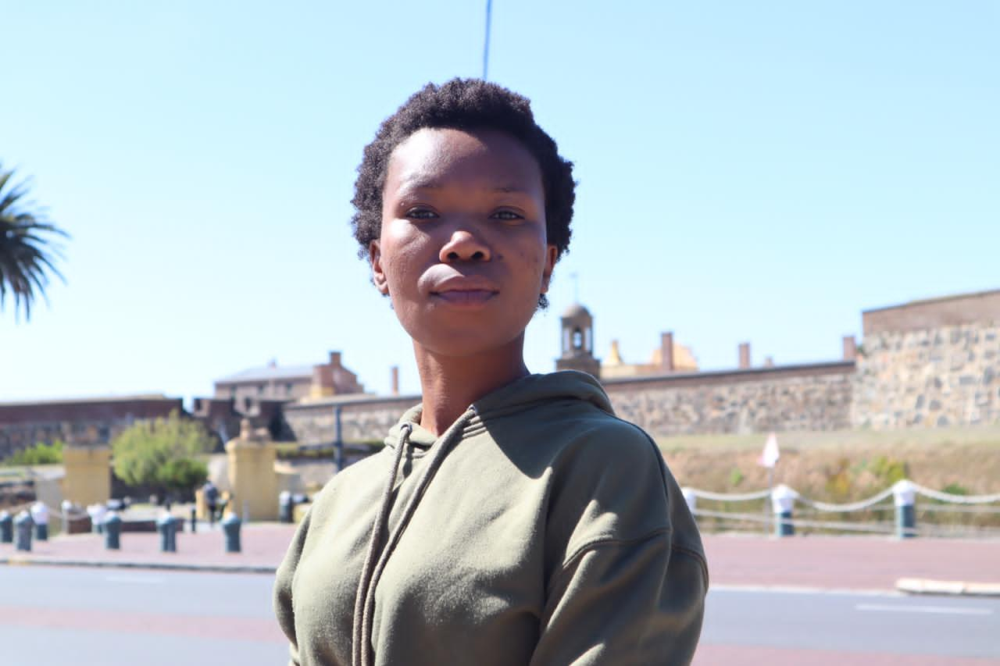
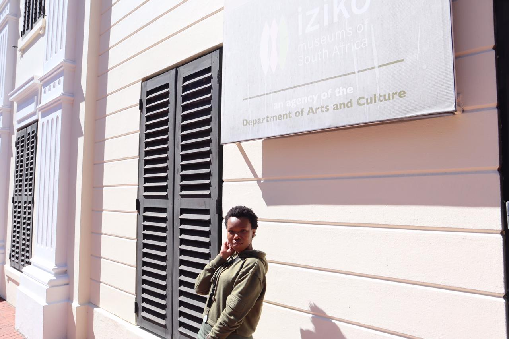

Owethu Sotomela

Which City
I would love to visit New York because it's a place where brains and bodies in indecent proximity to one another create the sparks of genius, invention, progress. New York City is the greenest city in America. The 843-acre Central Park, the most famous park in the city, is actually only the 5th largest. Jog, walk, bike, in-line skate, horseback ride, ice skate, rent row boats, play basketball, softball, soccer, tennis, enjoy special events and festivals in the city’s 1,700 parks and playgrounds, or just kick back and people-watch.
Foreign Language
I would love learn Portuguese because it is the sixth widely spoken language in the world, it is the official language in eight countries and there is a swelling demand for Portuguese Language Experts in various sectors such as accounts, technology, technical support, finance, exports, tourism and education.
| English | Portuguese |
|---|---|
| Hello | Ola |
| How are you | Como voce esta |
| I hope you are well | Eu espero que voce steja bem |
| Have a nice day | Tenha um bom dia |
Historic Places
Castle Of Good Hope
The castle was built by soldiers, volunteers, slaves and Khoi undergoing punishment. The building housed everything, bakery, and living quarters to various workshops, shops and prison cells. The castle was never attacked. In 1936 The Castle Of Good Hope was declared a national monument.
Iziko Museum
The houses african zoology, palentology and archneology colections. As a general museum comprising natural history and material culture from local and other groups further afield. It is a traditional centre of the home where families would get together to share their stories.
Long Street

Architecturally it is known for it's Victorian buildings with wroght iron balconies. Is a major street in the City Bowl section of Cape Town, South Africa. It has a number of hastles which provide accomodation to an international rooster of guests.